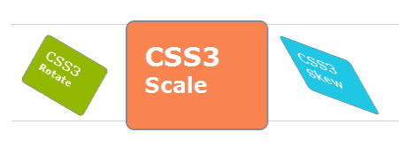
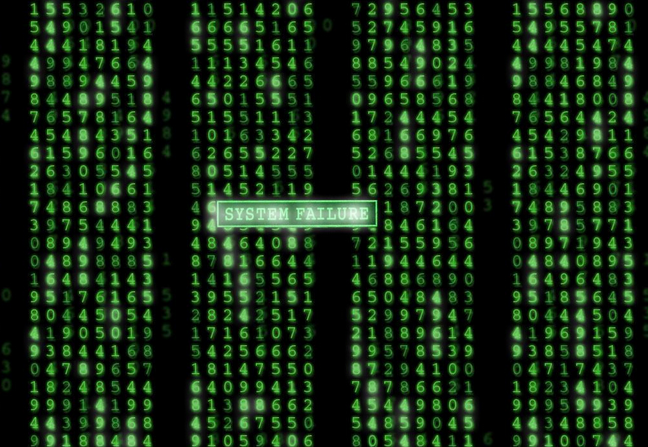
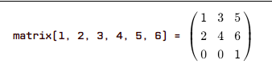
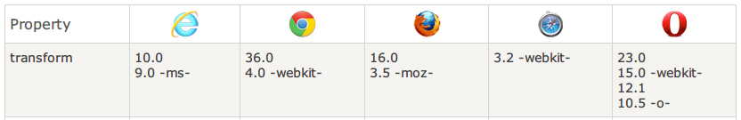

CSS3 2D Transform
BY Hao Ju Zheng
github:https://github.com/hjzheng
2D Transform
通过 CSS3 2D转换, 我们能够对元素进行移动、缩放、转动、拉长或拉伸。
如何Transform
CSS3 是通过 **transform** 属性实现2D变换。
selector {
transform: transform-function transform-function ...
}
translate函数
使用translate()函数，对元素进行位置移动
div {
-ms-transform: translate(50px,100px); /* IE 9 */
-webkit-transform: translate(50px,100px); /* Chrome, Safari, Opera */
transform: translate(50px,100px);
}
rotate函数
使用rotate()函数，对元素进行旋转
div {
-ms-transform: rotate(30deg); /* IE 9 */
-webkit-transform: rotate(30deg); /* Chrome, Safari, Opera */
transform: rotate(30deg);
}
scale函数
使用scale()函数，对元素进行缩放
div {
-ms-transform: scale(2,4); /* IE 9 */
-webkit-transform: scale(2,4); /* Chrome, Safari, Opera */
transform: scale(2,4);
}
skew函数
使用skew()函数，对元素进行扭曲
div {
-ms-transform: skew(30deg,20deg); /* IE 9 */
-webkit-transform: skew(30deg,20deg); /*Chrome, Safari, Opera*/
transform: skew(30deg,20deg);
}
matrix函数
什么是Matrix?
2D 矩阵变换方程
想了解更多
css3-matrix-transform
推导变换公式(兼容IE8)
CSS3 matrix(1,0,0,1,0,0)
matrix(a,b,c,d,e,f)
IE8 progid:DXImageTransform.Microsoft.Matrix
(M11=1, M12=0,M21=0,M22=1,SizingMethod='auto expand');
M11 == a
M12 == c
M21 == b
M22 == d
推导变换公式
//矩阵实现位移(disX和disY为偏移量)
x位移: e = e + disX;
y位移: f = f + disY;
//矩阵实现缩放(x,y为缩放倍数)
x轴缩放: a = x*a; c=x*c; e=x*e;
y轴缩放: b = y*b; d=y*d; f=y*f;
//矩阵实现扭曲(xDeg,yDeg为扭曲角度)
c = Math.tan(xDeg/180*Math.PI);
b = Math.tan(yDeg/180*Math.PI);
//矩阵实现旋转(deg为旋转角度)
a = Math.cos(deg/180*Math.PI);
b = Math.sin(deg/180*Math.PI);
c = -Math.sin(deg/180*Math.PI);
d = Math.cos(deg/180*Math.PI);
transform 兼容IE8
transform-origin
通过它设置旋转起点
div {
-ms-transform: rotate(45deg); /* IE 9 */
-ms-transform-origin: 20% 40%; /* IE 9 */
-webkit-transform: rotate(45deg); /*Chrome, Safari, Opera*/
-webkit-transform-origin: 20% 40%; /*Chrome, Safari, Opera*/
transform: rotate(45deg);
transform-origin: 20% 40%;
}